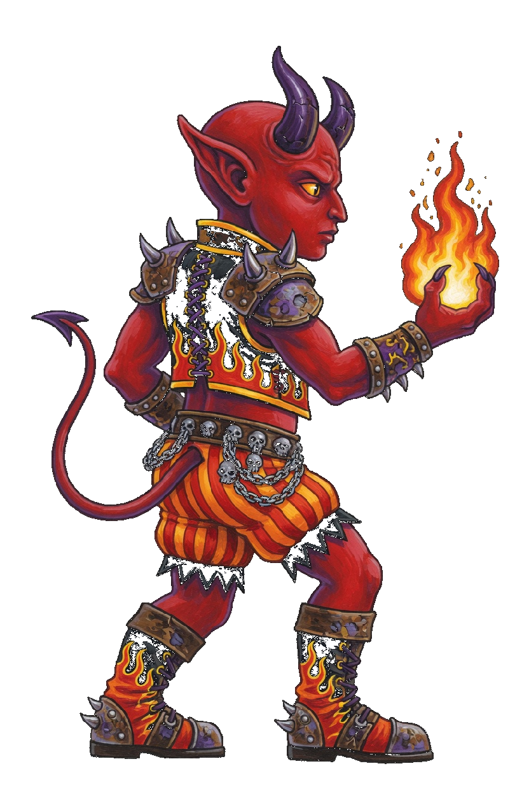
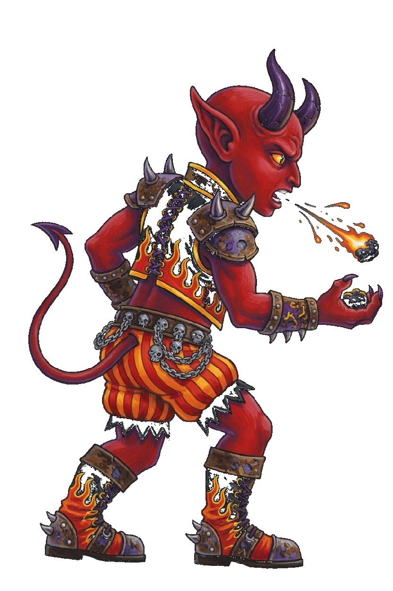
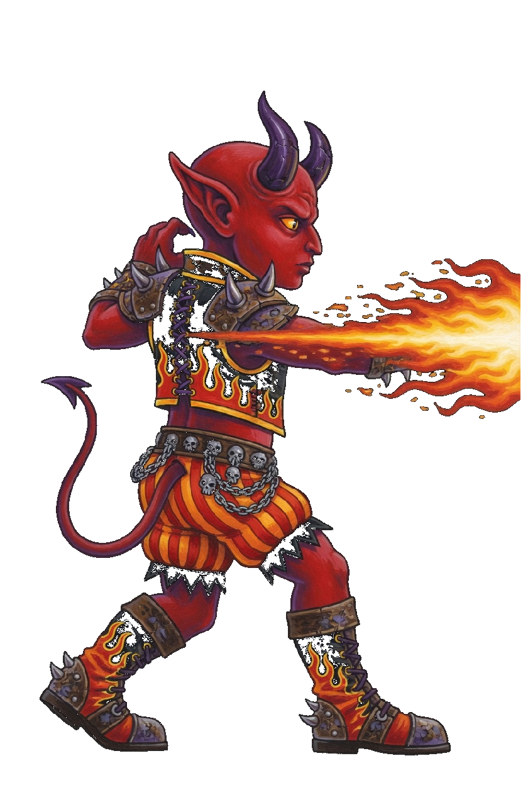
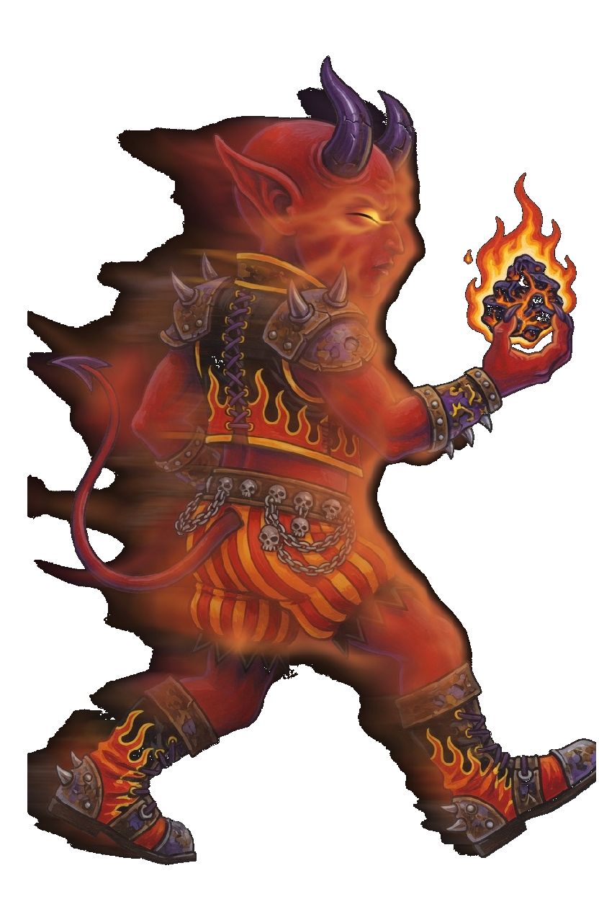
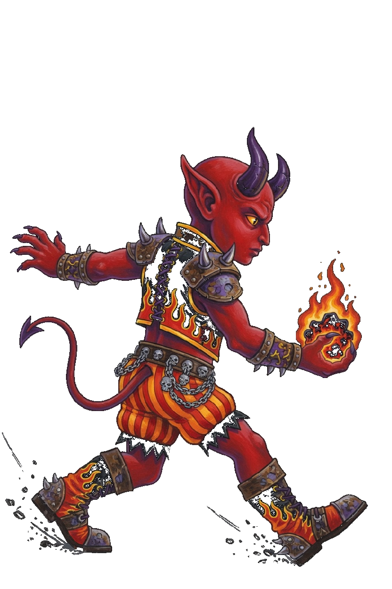
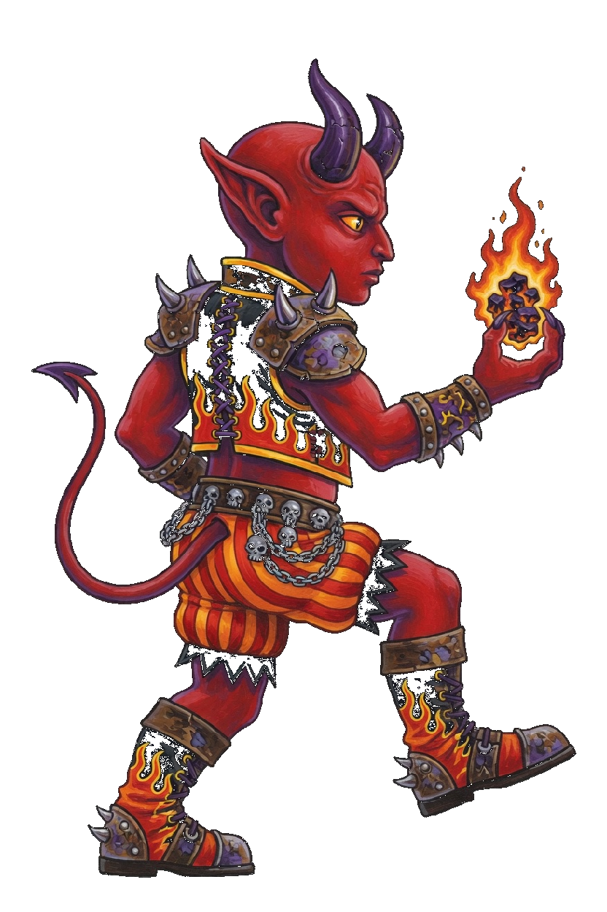
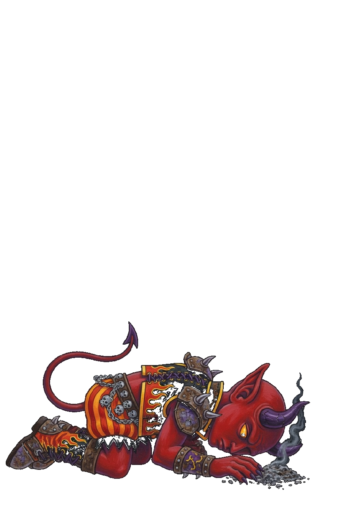
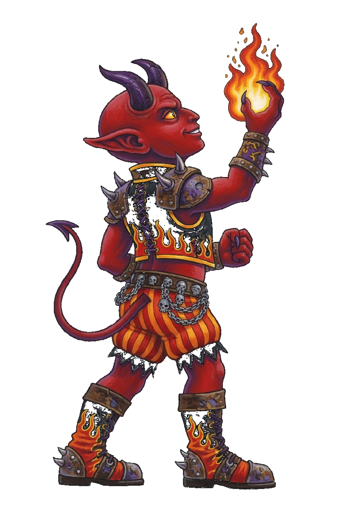

Imp · Crypt Fodder
This card is the only pose list. A later frame has to match one of these keys. Native facing is right. The whole sprite flips. Red body, two purple horns, yellow eyes, pointed ears, thin tail, coal in the forward hand. The boots are the foot line. Imp is a gun, so the corner step is Slip. There is no move named Dash and no Close key. Ember Spit, Imp Fire, and Flicker keep those book names.
| Book | Value |
|---|---|
| Basic | Ember Spit · range 7.4 |
| Body | 724 health · 34.8 damage · 1.01 attacks/s · speed 2.9 · armor 6 · range 7.4 · mana 60 · regen 8 |
| Crit / cooldown | 0.12 crit · 0.86 cooldown scale |
| Cards | Swift · Lucky · Nimble |
| Moves | Imp Fire · Flicker |
| Stride | Slip · a gun · 30s · cost 8 |
What stays off the body
- Ember Spit is the coal that leaves the mouth. The coal in the hand stays on the body.
- Imp Fire is the streak. The orange lance in the pit is the shot, not a second imp.
- Flicker is the heat veil on this body. Shade and Thief keep their own blink. The book name stays Flicker.
Keys

Idle
Still, facing right, coal in the forward hand, both boots on the foot line.

Ember Spit
Idle, then a coal leaves the mouth while the hand still holds one, then idle. 0.50s.

Imp Fire
Idle, then the flame streak leaves the forward hand, then idle. 0.52s.

Flicker
Idle, then the heat veil, coal still in the forward hand, then idle. 0.50s.

Slip
A lean toward the right, then idle. 0.35s. Corner step only.

Walk
Idle, then one stride. 0.72s. Do not copy it into a second step.

Death
Collapsed in the lower portion, coal out. 1.55s. It is not scaled up to standing height.

Win
Coal lifted, chin up, both boots on the foot line. 1.15s.